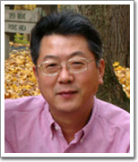

|
Chong H. Ahn, Professor |
-
Department of Electrical and Computer Engineering and Cumputer Science
College of Engineering
University of Cincinnati
-
Director
MicroSystems and BioMEMS Lab
Center for BioMEMS and Nanobiosciences
University of Cincinnati
Department of Electrical & Computer Engineering and Computer Science
Department of Biomedical Engineering
Cincinnati, Ohio 45221-0030
-
Tel: (513) 556-4767
Fax: (513) 556-7326
-
E-mail :chong.ahn@uc.edu
-
Web-page: http://www.biomems.uc.edu
|
|
Education |
- Inha University, S. Korea Electrical Engineering B.S., 1980
- Seoul National University, S. Korea Electrical Engineering M.S., 1983
- Georgia Institute of Technology, GA Electrical and Computer Eng. Ph.D., 1993
|
|
Professional Experience |
- Dec. 2004 - Present:
Director, Center for BioMEMS and Nanobiosystems, University of Cincinnati
- Nov. 2002 – Present:
Professor, Department of Biomedical Engineering (Secondary), University of Cincinnati, Cincinnati, Ohio
- Sept. 2001 - Present:
Professor, Director, Microsystems and BioMEMS Lab Department of Electrical & Computer Engineering and Computer Science, University of Cincinnati, Cincinnati, Ohio.
- Sept.1998 - Aug. 2001:
Associate Professor, Department of Electrical & Computer Engineering and Computer Science. University of Cincinnati, Cincinnati, Ohio.
- Oct. 1994 - Aug. 1998:
Assistant Professor, Associate Director, Center for Microelectronic Sensors and MEMS (CMSM), Department of Electrical & Computer Engineering and Computer Science. University of Cincinnati, Cincinnati, Ohio.
- June. 1993 - Oct. 1994:
Post Doctoral Associate (Advisor: Dr. Luby Romankiw, IBM Fellow), Center for Electrochemical Technology and Microfabrication (CETAM), IBM T. J. Watson Research Center, New York/ Post Doctoral Associate (Advisor: Prof. Mark G. Allen), Georgia Institute of Technology, Atlanta, GA.
|
| Editor or Editorial Board |
- Editor (2006-Present)
- IEEE/ASME Journal of Microelectromechanical Systems (MEMS)
- Editorial Board (2003-Present)
- Nano/Micro Small
- Journal of Micromechanics and Microengineering (JMM)
- Journal of Microfluidics and Nanofluidics
- Associate Editor
(2003-2005)
|
|
Awards and Honors |
- Appointed and honored as "Distinguished Engineering Researcher", College of Engineeing, University of Cincinnati (2006-)
- Fellow, The Institute of Physics (2004-)
- NASA Group Achievement Award, NASA, Glennan Microsystems Initiative Technical Team, UC (2004)
- Scientific Leadership Award, 4th Annual BioMEMS and Biomedical Nanotechnology WORLD (2003)
- 1st Tutorial Lecturer for Magnetic MEMS, IEEE Magnetic Society, INTERMAG (2001)
- Honor Roll Professor, College of Engineering Tribunal, University of Cincinnati (2000).
- 2nd Best Paper Award (out of 400 conference papers) from 13th European Conference on Solid-State Transducers, The Hageue, The Netherlands (1999).
- Research Award, College of Engineering (CoE), University of Cincinnati (1998).
- Middendorf Research Excellent Award' 98, Department of ECECS, University of Cincinnati (1998).
|
|
Research Interests |
- Development and characterization of magnetic MEMS and BioMEMS, which includes magnetic sensors, magnetic biofilters, biochemical detection cell, microfluidic devices, disposable smart plastic lab-on-a-chips, protein chips, and point-of-care testing systems, with relevant biochemical transduction mechanisms.
|
|
Patent Applications |
- C. H. Ahn, D. J. Sadler, W. Zhang, "Electromagnetically Driven Microactuated Device and Method of Making The Same," U.S. Patent, 6116863, Issued 9/12/2000.
- Chong H. Ahn and Mark Allen, "A Fully Integrated Magnetic Micromotor and Methods for Their Fabrication," U.S. Patent # 5710466, Issued by 01/20/1998.
- Chong H. Ahn and Mark Allen, "A Fully Integrated Micromachined Magnetic Particle Manipulator and Separator," U.S. Patent # 5655665, Issued by 8/12/1997.
- 11 US patent pending.
|
|
Publications (Selective Recent Publications) |
- Kwang W Oh and Chong H Ahn, "A Review of Microvalves," Journal of Micromechanics and Microengineering (JMM), Vol. 16, pp, R13-39, 2006.
- Clayton Sippola and Chong H. Ahn, "A Thick Film Screen-Printed Ceramic Capaciitive Pressure Microsensor for High Temperature Application," Journal of Micromechanics and Microengineering (JMM), Vol. 16, pp. 1086-1091, 2006.
- D. S. Kim, S. H. Lee, C. H. Ahn, J. Y. Lee and T. H. Kwon, "Disposable Integrated Microfluidic Biochip for Blood Typing by Plastic Microinjection Molding," Lab Chip, Vol. 6, pp. 794-802, 2006.
- A. Piruska, I. Nicevic, S. H. Lee, C. H. Ahn, W. Heineman, P. Limbark, and C. Seliskar, "The Autofluorescence of Plastic Material and Chipsd Measured Under Laser Irradiation," Lab Chip, Vol. 5, pp. 1348-1354, 2005. (Selected as the hot article by Lab on a Chip).
- Kwang W. Oh, Rong Rong and C. H. Ahn, "Miniaturization of Pinch-type Valves and Pumps for Practical Micro Total Analysis System (uTAS) Integration," Journal of Micromechanics and Microengineering, Vol. 15, pp. 2449-2455, 2005.
- D. S. Kim, S. H. Lee, T. H. Kwon and C. H. Ahn, "A serpentine laminating micromixer combining splitting/recombination and advection," Lab Chip, Vol. 5, pp. 739-747, 2005.
- Y. Sohn; Junhai Kai; Chong H. Ahn "Protein Array Patterning on Cyclic Olefin Copolymer (COC) for Disposable Protein Chip," Sensor Letters, Vol.2, pp. 171-174(4), 2005.
- S. Appasamy, W. Li, S. H. Lee, J. T. Boyd, and C. H. Ahn, "High Throughput Plastic Microlenses Fabricated Using Micro-Injection Molding Techniques," Optical Engineering, Vol. 44 (12), pp. 123401-9, 2005.
- X. Zhu, C. Gao, J. W. Choi, P. L. Bishop and C. H. Ahn, "On-Chip Generated Mercury Microelectrode for Heavy Metal Ion Detection," Lab Chip, 5, pp.212-217, 2005. (Selected as the hot article by Lab on a Chip)
- J. Do, J.-W. Choi, and C. H. Ahn, "Low-Cost Magnetic Interdigitated Array on a Plastic Wafer," IEEE Transactions on Magnetics, Vol. 40, No. 4, pp. 3009-3011, 2004.
- K. Kim, D. Park, H. Lu, W. Che, K. Kim, JB Lee, and C. H. Ahn, "A Tapered Hollow Metallic Microneedle Array Using Backside Exposure of SU-8," Journal of Micromechanics and Microengineering, Vol. 14, pp. 597-603, 2004.
- (Invited) C. H. Ahn, J.-W. Choi, G. Beaucage, J. H. Nevin, J.-B. Lee, A. Puntambekar, and J. Y. Lee, "Disposable Smart Lab on a Chip for Point-of-Care Clinical Diagnostics," Proceedings of the IEEE (Special Issue for BioMEMS), Volume: 92, No.1, pp. 154-173, 2004.
- X. Zhu, and C. H. Ahn, "Electrochemical Determination of Reversible Redox Species at Interdigitated Array Micro/Nanoelectrodes Using Charge Injection Method," IEEE Transaction on NanoBioscience, Vol.4. No. 2, pp. 164-169, 2004.
- X. Zhu, J. W. Choi, and C. H. Ahn, "A New Dynamic Electrochemical Transduction Mechanism for Interdigitated Array Microelectrodes," Lab Chip, 4, pp.581 - 587, 2004. (Selected as the hot article by Lab on a Chip)
- Jun Yan, Stephen T. Kowel, Hyoung J. Cho, Chong H. Ahn, Gregory P. Nordin, and Jeffrey H. Kulick, "Autostereoscopic three-dimensional display based on micromirror array," Applied Optics, vol. 43, no. 18, pp.3686-3696, 2004.
- Chien-Chong Hong, Jin-Woo Choi, and Chong H. Ahn, "A Novel In-Plane Passive Microfluidic Mixer With Modified Tesla Structures," Lab Chip, Vol. 4, issue 2, pp.109-113, 2004
- C. -C. Hong, S. Murugesan, S. Kim, G. Beaucage, J. -W. Choi and C. H. Ahn, "A Functional On-Chip Pressure Generator Using Solid Chemical Propellant for Disposable Lab-on-a-Chip," Lab Chip., 3, pp. 281 - 286, 2003.
- D. E. Starkey, Y. Abdelaziez, C. H. Ahn, J. Tu, L. Anderson, K. R. Wehmeyer, N. J. Izzo, A. N. Carr, K. G. Peters, J. J. Bao, H. B. Halsall, W. R. Heineman, "Determination of Endogenous Extracellular Signal-Regulated Protein Kinase by Microchip Capillary Electrophoresis," Analytical Biochemistry, 316(2), 181-191, 2003.
- J.-W. Choi, K. W. Oh, J. H. Thomas, W. R. Heineman, H. B. Halsall, J. H. Nevin, A. J. Helmicki, H. T. Henderson, and C. H. Ahn, "An Integrated Microfluidic Biochemical Detection System for Protein Analysis with Magnetic Bead-Based Sampling Capabilities," Lab Chip, Vol. 2, Issue 1, pp. 27-30, 2002.
- A. Puntambekar, J.-W. Choi, C. H. Ahn, S. Kim, and V. B. Makhijani, "Fixed-Volume Metering Microdispenser Module," Lab Chip, Vol. 2, Issue 4, pp. 213-218, 2002.
- A. Puntambeker and C. H. Ahn, "Self-aligning Microfluidic Interconnects for Glass and Plastic Based Microfluidic Systems," Journal of Micromechanics and Microengineering (JMM), Vol. 12, No. 2, pp. 25-40, 2002.
|
|
Synergestic Activities |
- Advisory Editorial Board, Journal Small, 2004 – now.
- Advisory Editorial Board, Journal of Microfluidics and Nanofluidics, 2003- now
- Editorial Board, Journal of Micromechanics and Microengineering (JMM), 1999 – now
- Associate Editor, IEEE Sensors Journal, 2002 - 2004.
- Guest Editor, Journal of Biomedical Microdevices, Special Issue on "Microfluidics and Lab-on-a-chip," Vol. 3, 2001.
- Organizer, ASME MEMS Workshop, "Microfluidics and Lab-on-a-chip Workshop," 2002, 2003.
- Co-Chairpersons, Knowledge Foundations, "BioMEMS Workshop," 2001, 2002, 2003
- Technical Program Committee, IEEE International MEMS Conference, 2001, 2003.
|
|
Collaborators Other Than Those Being Cited |
- Michael G. Bissell, Jae Lee (OSU), J.B. Lee (UT Dallas), Joe. Nevin, Gregory. Beaucage, Bill Heineman, Brian Halsall, Pat Limbark, Carl Seliskar, Ian Papautsky (UC), Ken Wehmeyer (P&G), S. Krishnamoorthy (CFD-RC), Ken Kozack (Meridian Biosciences), Brian Gibler (MD, UC), Edward Jauch (MD, UC), Joseph Clark (UC), Thimothy Cripe (MD, CCHMC), Richard Azizkhan (MD, CCHMC), Sung W. Kim (Harvard Univ.)
|
|
Graduate Students and Post-Doctoral Students |
- Post-Doctoral Fellows:
Dr. Shekhar Bhansali (1998-2000), Dr. S. M. Lee (1999-2000), Dr. Jin-Woo Choi (2001-2002), Dr. Sanghyo Kim (2001-2002), and Dr. Young-Soo Sohn (2001-2002)
- Ph. D. STUDENTS:
- Graduated: Trifon M. Liakopolous (1995-2000), Daniel J. Sadler (1996-2001), Jin Woo Choi (1996-2001), Kwang Wook Oh (1996-2001), Hyoung Jin Cho (1997-2002), Aniruddha Puntambekar (1998-2003), Chien-Chong Hong (1998-2004), Xiaoshan Zhu (2000-2005), Chuan Gao (2000-2005), Clayton Sippola (2001-2006)
- Under Studying: Rong Rong (2000-), Chunyan Li (2001-), Jungyoup Han (2001-), Junhai Kai (2001-), Japhil Do (2001-), Se Hwan Lee (2001-), Soo Hyun Lee (2002-), Matthew Estes (2003-), Michael Rust (2003-), Pei-Ming Wu (2003-), Zhiwei Zuo (2003-), Andrew Browun (2005-), Jun Sub Shim (2005-), Kang Kug Lee (2006-).
- MASTER STUDENTS:
- Graduated: Wenjin Zhang (1994-1996), Ming Xu (1995-1998), Kurt Kramer (1996-1999), Jeffrey Cropp (1996-1999), Arum Han (1997-2000), Srinivasan Iyengar (1997-1999), Shomir Banejee (1999-2002), Ramachandran Trichur (2000-), Sreeram Appasamy (2000-), Phalgun Mynemi (2002-), and Alok Jani (2002-), Ashwin Kumar Samarao (2004-2006), Nathaniel Hadlock (2005-2006).
- Under Studying:
|
|
Advisors |
- Ph.D. Advisor: Mark G. Allen, Ph.D., Dept. of Electrical and Computer Engineering, Georgia Institute of Technology, Atlanta
- Post-Doc Supervisor: Luby Romankiw, Ph. D, IBM Fellow, IBM T.J. Watson Research Center, NY
|